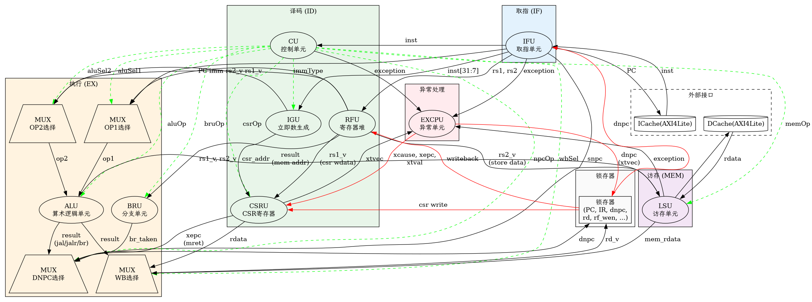
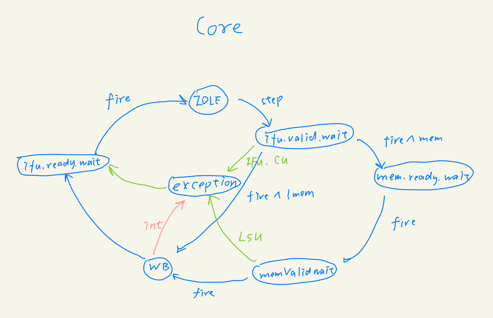
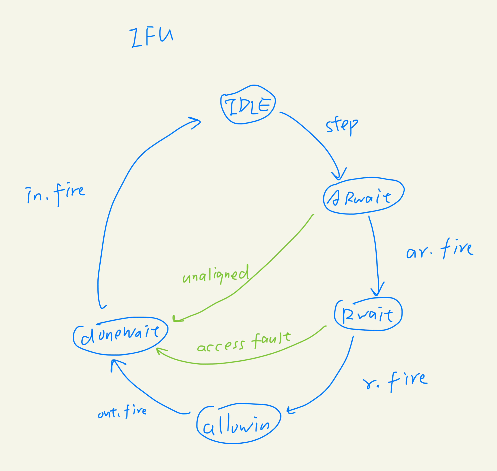
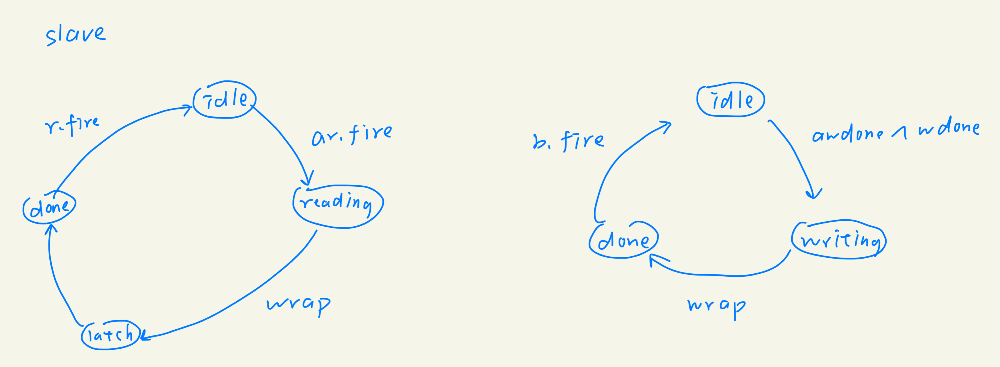

一生一芯 C 阶段结业答辩
姓名：王靳
学校：哈尔滨工业大学（深圳）
从 hello world 窥探 NEMU+AM 的协同工作
am-tests: make run mainargs=h
0x80000000: call [_start@0x8000_0000] <- pc 初始化的位置, 初始化 trm
0x8000000c: call [_trm_init@0x80001ac4] <- 初始化 trm, 并跳转到 main
0x80001adc: call [main@0x80000010]
0x800001d8: call [printf@0x80003f04] <- 调用 klib 中的 printf
0x80003f54: call [vprintf@0x80005408]
0x8000543c: call [__vprintf@0x80004a44]
0x80004ab4: call [vprintf_helper@0x80005458]
0x80005498: call [putch@0x80001a60]
0x80001a84: call [outb@0x80001a24] <- mmio, 串口输出
Hello, AM World @ riscv32
NEMU初始化PC=0x8000_0000, 这个时候开始运行 _start 处的代码
那为什么0x8000_0000处就是_start呢?
这需要两方面的努力: 链接器、装载器
这里的装载器可以理解为一个nvm的ram
// nemu/src/isa/riscv32/init.c
void init_isa() {
memcpy(guest_to_host(RESET_VECTOR), img, sizeof(img)); /* init ram */
restart(); /* reset pc */
}
这里的装载器可以理解为一个nvm的ram
ENTRY(_start) /* (1) set _start as entry */
PHDRS { text PT_LOAD; }
SECTIONS {
/* 其中 _pmem_start, _entry_offset 是给链接器传的参数 */
. = _pmem_start + _entry_offset;
.text : {
*(entry) /* (2) put entry */
*(.text*)
} : text
etext = .; _etext = .;
}
NEMU复位后, PC指向0x8000_0000, 开始执行 _start 处的代码
_start:
mv s0, zero
la sp, _stack_pointer
call _trm_init
调用 _trm_init, 然后 _trm_init 又调用 main
extern int main(const char *args);
void _trm_init() {
int ret = main(mainargs);
halt(ret);
}
其中 main 是一个外部函数, 也就是 am-kernels 中定义的五彩缤纷的应用程序
从 hello world 窥探 Makefile 的层层展开
当我们键入下面这条命令时, 发生了什么?
kernels/demo> make ARCH=riscv32-nemu run mainargs=h
am-kernels/kernels/demo/Makefile
abstract-machine/Makefile
DEPENDENCIES.d
abstract-machine/scripts/riscv32-nemu.mk
abstract-machine/scripts/isa/riscv.mk
abstract-machine/scripts/platform/nemu.mk
abstract-machine/scripts/platform/sim.mk # 抽取了仿真平台通用的结构
LIB_TEMPLATE:
abstract-machine/klib/Makefile
abstract-machine/am/Makefile
run: nemu/Makefile
FILELIST_MK
nemu/include/config/auto.conf
nemu/include/config/auto.conf.cmd
nemu/scripts/native.mk
nemu/scripts/config.mk
nemu/scripts/build.mk
DEPENDENCIES.d
nemu/tools/difftest.mk
YSYX_ROOT/Makefile # 用于跟踪 git commit
从 hello world 窥探 printf 的实现 (nemu)
0x800001d8: call [printf@0x80003f04] <- 调用 klib 中的 printf
0x80003f54: call [vprintf@0x80005408]
0x8000543c: call [__vprintf@0x80004a44]
0x80004ab4: call [vprintf_helper@0x80005458]
0x80005498: call [putch@0x80001a60]
0x80001a84: call [outb@0x80001a24] <- mmio, 串口输出
[host]: decode_exec
[host]: vaddr_write
[host]: paddr_write
[host]: mmio_write
[host]: map_write
[host]: invoke_callback -> serial_io_handler
[host]: serial_putc -> putc
从 hello world 窥探 printf 的实现 (npc)
0x800001d8: call [printf@0x80003f04] <- 调用 klib 中的 printf
0x80003f54: call [vprintf@0x80005408]
0x8000543c: call [__vprintf@0x80004a44]
0x80004ab4: call [vprintf_helper@0x80005458]
0x80005498: call [putch@0x80001a60]
0x80001a84: call [outb@0x80001a24] <- mmio, 串口输出
[host]: [译码]
[host]: [访存]
[host]: [AXI4-Lite总线桥]
[host]: [AXI4LiteUartSlave]
[host]: [printf]
单周期硬件框图

多周期硬件框图
多周期状态机（整体）
IFU状态机
LSU状态机

AXI4Lite总线Slave状态机
Vertical Slides
Slides can be nested inside of each other.
Use the Space key to navigate through all slides.
Basement Level 1
Nested slides are useful for adding additional detail underneath a high level horizontal slide.
Basement Level 2
That's it, time to go back up.
Slides
Not a coder? Not a problem. There's a fully-featured visual editor for authoring these, try it out at https://slides.com.
Hidden Slides
This slide is visible in the source, but hidden when the presentation is viewed. You can show all hidden slides by setting the `showHiddenSlides` config option to `true`.
Pretty Code
import React, { useState } from 'react';
function Example() {
const [count, setCount] = useState(0);
return (
...
);
}
Code syntax highlighting courtesy of highlight.js.
With Animations
Point of View
Press ESC to enter the slide overview.
Hold down the alt key (ctrl in Linux) and click on any element to zoom towards it using zoom.js. Click again to zoom back out.
(NOTE: Use ctrl + click in Linux.)
Auto-Animate
Automatically animate matching elements across slides with Auto-Animate.
Auto-Animate
Auto-Animate
Touch Optimized
Presentations look great on touch devices, like mobile phones and tablets. Simply swipe through your slides.
Lightbox
Turn any element into a lightbox using data‑preview‑image & data‑preview‑video.
<img src="image.png" data-preview-image="image.png">
<img src="video.png" data-preview-video="video.mp4">

Add the r-fit-text class to auto-size text
FIT TEXT
Fragments
Hit the next arrow...
... to step through ...
... a fragmented slide.
Fragment Styles
There's different types of fragments, like:
grow
shrink
fade-out
fade-right, up, down, left
fade-in-then-out
fade-in-then-semi-out
Highlight red blue green
Transition Styles
You can select from different transitions, like:
None -
Fade -
Slide -
Convex -
Concave -
Zoom
Themes
reveal.js comes with a few themes built in:
Black (default) -
White -
League -
Sky -
Beige -
Simple
Serif -
Blood -
Night -
Moon -
Solarized
Slide Backgrounds
Set data-background="#dddddd" on a slide to change the background color. All CSS color formats are supported.
Gradient Backgrounds
<section data-background-gradient=
"linear-gradient(to bottom, #ddd, #191919)">Image Backgrounds
<section data-background="image.png">Tiled Backgrounds
<section data-background="image.png" data-background-repeat="repeat" data-background-size="100px">Video Backgrounds
<section data-background-video="video.mp4,video.webm">... and GIFs!
Background Transitions
Different background transitions are available via the backgroundTransition option. This one's called "zoom".
Reveal.configure({ backgroundTransition: 'zoom' })Background Transitions
You can override background transitions per-slide.
<section data-background-transition="zoom">Iframe Backgrounds
Since reveal.js runs on the web, you can easily embed other web content. Try interacting with the page in the background.
Marvelous List
- No order here
- Or here
- Or here
- Or here
Fantastic Ordered List
- One is smaller than...
- Two is smaller than...
- Three!
Tabular Tables
| Item | Value | Quantity |
|---|---|---|
| Apples | $1 | 7 |
| Lemonade | $2 | 18 |
| Bread | $3 | 2 |
Clever Quotes
These guys come in two forms, inline: The nice thing about standards is that there are so many to choose from
and block:
“For years there has been a theory that millions of monkeys typing at random on millions of typewriters would reproduce the entire works of Shakespeare. The Internet has proven this theory to be untrue.”
Intergalactic Interconnections
You can link between slides internally, like this.
Speaker View
There's a speaker view. It includes a timer, preview of the upcoming slide as well as your speaker notes.
Press the S key to try it out.
Export to PDF
Presentations can be exported to PDF, here's an example:
Global State
Set data-state="something" on a slide and "something"
will be added as a class to the document element when the slide is open. This lets you
apply broader style changes, like switching the page background.
State Events
Additionally custom events can be triggered on a per slide basis by binding to the data-state name.
Take a Moment
Press B or . on your keyboard to pause the presentation. This is helpful when you're on stage and want to take distracting slides off the screen.
Much more
- Right-to-left support
- Extensive JavaScript API
- Auto-progression
- Parallax backgrounds
- Custom keyboard bindings